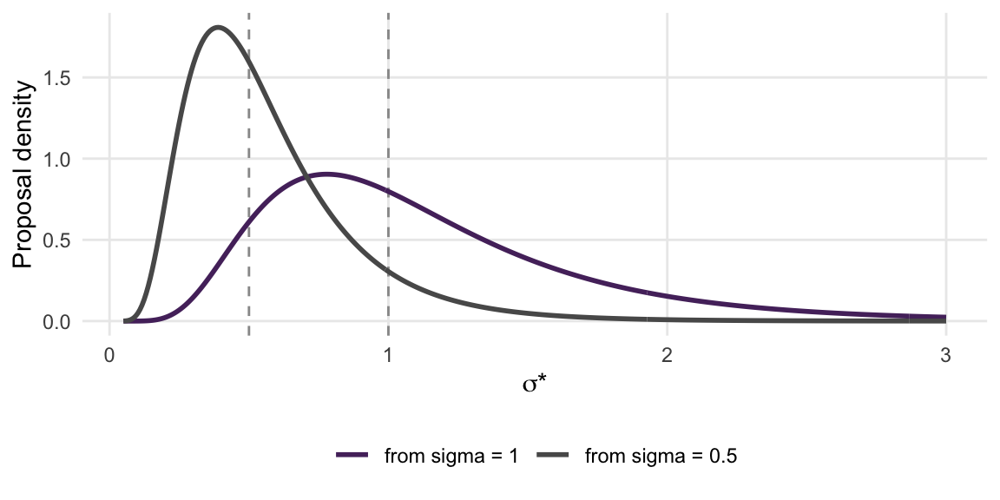
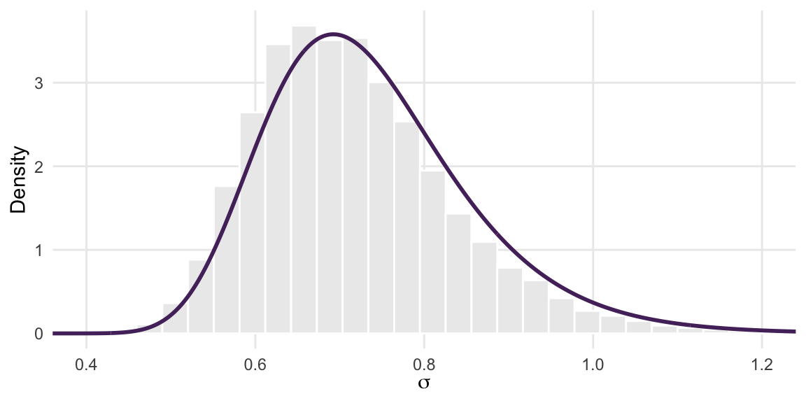
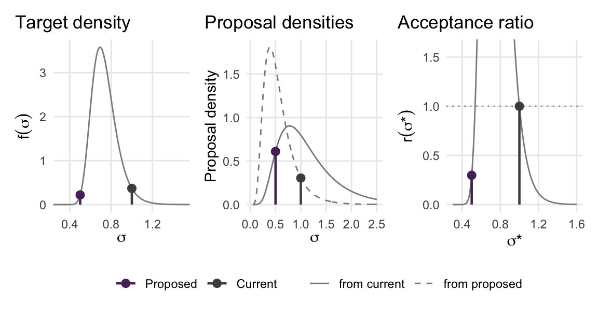
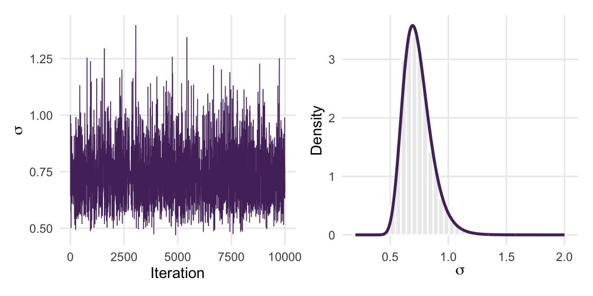
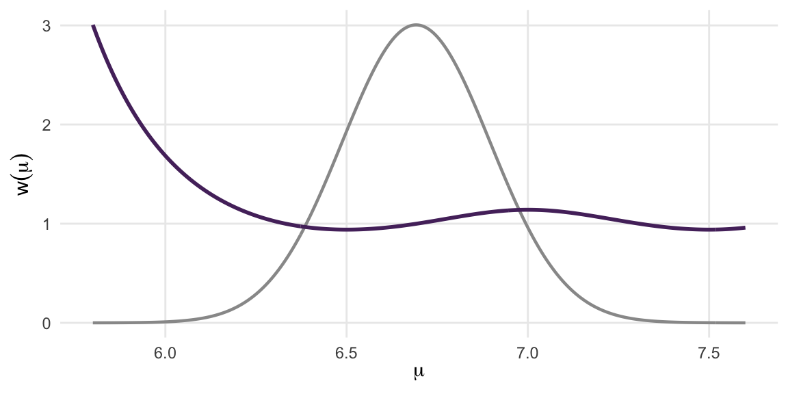

library(tidyverse)
library(posterior)7 The Metropolis–Hastings algorithm
Every sampler in the last two chapters used a Normal distribution centered on the current state as proposal. In Chapter 5 we made that choice because, without knowing where the posterior mass is, nearby is a safe guess, and in Chapter 6 we learned to let the sampler tune its step size. But the Normal random walk is not the only proposal we could use, and it is often not the best one. Sometimes we already have a good approximation to the posterior, say from a conjugate analysis of a simpler model, and it seems wasteful to explore the posterior in small steps with a random walk when we could draw candidates directly from the posterior approximation.
What stops us from using such a proposal is the symmetry assumption in the detailed-balance proof of Chapter 5, \(q(b \mid a) = q(a \mid b)\). A proposal that draws candidates from an approximation to the posterior does not generally satisfy this condition. The Metropolis–Hastings algorithm (Hastings, 1970) extends the Metropolis acceptance rule to asymmetric proposals by adding a correction factor to the acceptance ratio. This opens up a much wider range of proposals. We work through two examples: a proposal for a positive parameter, the standard deviation, and the independence sampler, which draws candidates from a fixed approximation to the posterior and can produce nearly independent draws when that approximation is good. The chapter closes with a look at the proposals that later chapters build on the same foundation.
In this chapter, we will make use of the following packages:
Goals
- Derive the density of the log-Normal proposal for a standard deviation, and compute the ratio \(q(\sigma \mid \sigma^\star) / q(\sigma^\star \mid \sigma) = \sigma^\star / \sigma\).
- Explain why the Metropolis rule gives the wrong stationary distribution for an asymmetric proposal, and why \(\widehat{R}\) and the effective sample size cannot reliably detect this error.
- Derive the Hastings correction from detailed balance, and compute Metropolis–Hastings acceptance probabilities for a given proposal.
- Implement a general Metropolis–Hastings sampler in R that takes a proposal function and its log density as arguments.
- Implement an independence sampler, interpret its weight function \(w = f/q\), and explain why a high acceptance rate is good news for it, unlike for a random walk.
7.1 Asymmetric proposals and the Hastings correction
7.1.1 A proposal for a positive parameter
Let’s return to the sleep survey of Chapter 5 and, to keep the problem one-dimensional, flip the roles of the two parameters. We treat the mean as known, \(\mu = 6.6\) hours, close to the sample mean, and estimate the standard deviation \(\sigma\). We give \(\sigma\) an \(\text{Exponential}(1)\) prior, which expresses an expected spread of about an hour while allowing smaller and larger values. The log posterior is the log likelihood plus the log prior, with an additional line that returns \(-\infty\) when \(\sigma\) is not positive, so that such proposals are rejected instead of causing an error in dnorm(), which requires a positive standard deviation.
sleep_hours <- c(6.5, 7.2, 5.8, 6.9, 7.5, 6.1, 5.5, 7.0, 6.4, 8.1,
6.7, 5.9, 7.3, 6.2, 6.8, 7.7, 5.6, 6.3, 7.1, 6.0)
mu_known <- 6.6
log_posterior_sigma <- function(sigma, y = sleep_hours) {
if (sigma <= 0) return(-Inf)
sum(dnorm(y, mean = mu_known, sd = sigma, log = TRUE)) + # log likelihood
dexp(sigma, rate = 1, log = TRUE) # log prior
}The random walk of Chapter 5 would work on this target, since proposals below zero are simply rejected. But a Normal proposal centered on the current \(\sigma\) does not account for the boundary at zero. An alternative is to propose on the log scale, which transforms the positive standard deviation into a value on the real line. We then take a Normal random step, \[ \log \sigma^\star = \log \sigma^{(t)} + \varepsilon, \qquad \varepsilon \sim \text{N}(0, c^2). \] Exponentiating both sides gives \[ \sigma^\star = \sigma^{(t)} e^\varepsilon. \] Thus, proposing on the log scale is equivalent to multiplying the current standard deviation by a random positive factor. The proposal always remains positive, and the size of the change scales with the current value.
The logarithm of the proposed value \(\log \sigma^\star = \log \sigma^{(t)} + \varepsilon\) has a Normal distribution with mean \(\log \sigma^{(t)}\) and variance \(c^2\), and therefore the proposed value \(\sigma^\star\) has a log-Normal distribution. To obtain its density, we use the change-of-variables formula. If \(Y = g(X)\) is a one-to-one transformation of a random variable \(X\), meaning that each value of \(Y\) corresponds to exactly one value of \(X\), then the density of \(Y\) is \[ f_Y(y) = f_X\left(g^{-1}(y)\right)\, \left|\frac{d}{dy}\,g^{-1}(y)\right|. \] The first factor evaluates the density of \(X\) at the value corresponding to \(y\), while the second factor, called the Jacobian, accounts for the change of scale. For our proposal, \(\sigma^\star = \sigma^{(t)}e^\varepsilon\), so \(\varepsilon = \log \sigma^\star - \log \sigma^{(t)}\) and \(d\varepsilon/d\sigma^\star = 1/\sigma^\star\). Applying the formula gives \[ \begin{aligned} f(\sigma^\star \mid \sigma) &= f_\varepsilon(\log \sigma^\star - \log \sigma)\, \left|\frac{d\varepsilon}{d\sigma^\star}\right|\\ &= \frac{1}{\sigma^\star c \sqrt{2\pi}}\, \exp\!\left\{-\frac{(\log \sigma^\star - \log \sigma)^2}{2c^2}\right\}. \end{aligned} \] This is a log-Normal density with mean \(\exp(\log\sigma + c^2 /2)\) and variance \((\exp(c^2)-1)(\exp(2\log\sigma + c^2))\).
The log-Normal proposal density is not symmetric, as Figure 7.1 illustrates. For example, the density of proposing \(0.5\) from \(1\) is 0.61, whereas the density of proposing \(1\) from \(0.5\) is 0.305, only half as much. In general, the exponential terms are identical in both directions because \((\log \sigma^\star - \log \sigma)^2\) is unchanged when the two values are exchanged. Only the factors in front differ: \[ \frac{q(\sigma \mid \sigma^\star)}{q(\sigma^\star \mid \sigma)} = \frac{1/\sigma}{1/\sigma^\star} = \frac{\sigma^\star}{\sigma}. \] Moves toward smaller values therefore have a higher proposal density than the corresponding reverse moves.

What happens if we ignore this asymmetry and use the Metropolis rule, accepting with probability \(\min\{1, f(\sigma^\star)/f(\sigma^{(t)})\}\)? This rule accounts for differences in target density, but not for differences in how often moves are proposed. Suppose a downward move is proposed twice as often as its reverse. Even if the Metropolis rule gives the correct acceptance probability based on the target densities, the downward move still has twice as many opportunities to be accepted. The chain therefore favors smaller values of \(\sigma\) and has the wrong stationary distribution. We can investigate this by replacing the Normal proposal in metropolis() with the log-Normal one, leaving the acceptance rule unchanged.

The histogram in Figure 7.2 lies slightly to the left of the posterior density. Its mean is 0.717, against 0.737 for the posterior. The difference is systematic and does not disappear with more iterations. Nevertheless, the uncorrected Metropolis algorithm still defines a valid Markov chain. It has a stationary distribution and converges to that distribution, but not to the intended posterior. Its effective sample size can be large and several chains can have \(\widehat{R}\) close to \(1\), even though they sample from the wrong distribution. These diagnostics assess sampling efficiency and agreement between chains, not whether the stationary distribution is the posterior we intended.
7.1.2 The Hastings correction
For the Metropolis algorithm, we used detailed balance to determine the acceptance probability. We can use the same argument for an asymmetric proposal density \(q(\theta^\star \mid \theta)\). Let \(\alpha(\theta, \theta^\star)\) denote the probability of accepting a move from \(\theta\) to \(\theta^\star\). For the chain to move from \(\theta\) to a different state \(\theta^\star\), that state must first be proposed and then accepted. The transition density is therefore \[ K(\theta, \theta^\star) = q(\theta^\star \mid \theta) \, \alpha(\theta, \theta^\star). \] Detailed balance with respect to the target \(f\) requires \[ f(\theta) \, q(\theta^\star \mid \theta) \, \alpha(\theta, \theta^\star) = f(\theta^\star) \, q(\theta \mid \theta^\star) \, \alpha(\theta^\star, \theta). \tag{7.1}\]
When the chain is in its stationary distribution, the product \(f(\theta)K(\theta,\theta^\star)\) describes the density of transitions from \(\theta\) to \(\theta^\star\). This is called the probability flow between the two states. Detailed balance requires the flow from \(\theta\) to \(\theta^\star\) to equal the flow in the opposite direction. With a symmetric proposal, the proposal densities are equal, as in Chapter 5. With an asymmetric proposal, the acceptance probabilities must compensate for their difference.
One acceptance probability that satisfies detailed balance is \[ \alpha(\theta, \theta^\star) = \min\!\left\{1, \frac{f(\theta^\star) \, q(\theta \mid \theta^\star)}{f(\theta) \, q(\theta^\star \mid \theta)}\right\}. \] Substituting this into the left-hand side of Equation 7.1, and bringing \(f(\theta) \, q(\theta^\star \mid \theta)\) inside the minimum, gives \[ f(\theta) \, q(\theta^\star \mid \theta) \, \alpha(\theta, \theta^\star) = \min\{f(\theta) \, q(\theta^\star \mid \theta), \; f(\theta^\star) \, q(\theta \mid \theta^\star)\}. \] This expression is unchanged when \(\theta\) and \(\theta^\star\) are exchanged, since doing so merely reverses the order of the quantities inside the minimum. It therefore also equals \(f(\theta^\star) \, q(\theta \mid \theta^\star) \, \alpha(\theta^\star, \theta)\), the right-hand side of Equation 7.1. Thus, detailed balance holds.
The factor \(q(\theta \mid \theta^\star) / q(\theta^\star \mid \theta)\) is what makes the flows balance when the proposal is asymmetric. When the proposal is symmetric, this factor equals one, and we recover the Metropolis rule of Chapter 5.
The Metropolis–Hastings algorithm
Given a target density \(f\) that we can evaluate up to a constant, a starting value \(\theta^{(0)}\), and a proposal density \(q(\theta^\star \mid \theta)\) that we can sample from and evaluate in both directions:
- Propose. Draw \(\theta^\star \sim q(\theta^\star \mid \theta^{(t)})\).
- Compare. Compute \[ r = \frac{f(\theta^\star)}{f(\theta^{(t)})} \times \frac{q(\theta^{(t)} \mid \theta^\star)}{q(\theta^\star \mid \theta^{(t)})}. \] The first factor is the Metropolis ratio; the second is the Hastings correction.
- Accept or reject. If \(r \geq 1\), set \(\theta^{(t+1)} = \theta^\star\). Otherwise draw \(u \sim \text{Unif}(0, 1)\) and set \(\theta^{(t+1)} = \theta^\star\) if \(u < r\), and \(\theta^{(t+1)} = \theta^{(t)}\) if not.
The algorithm satisfies detailed balance with respect to \(f\). To ensure that the chain can explore the full posterior, the proposal must also allow movement between the regions where \(f\) is positive. The normalizing constant of \(f\) cancels as before.
In the Metropolis algorithm, a proposal to a state with higher target density was always accepted, and a proposal to a state with lower density was accepted with probability equal to the density ratio. Neither holds with an asymmetric proposal. Consider the move from \(\sigma = 1\) to \(\sigma^\star = 0.5\) in our sleep example, illustrated in Figure 7.3. The posterior density at \(0.5\) is 0.596 times that at \(1\), so the original Metropolis rule would accept the move with probability 0.596. But the log-Normal proposal is twice as likely to propose \(0.5\) from \(1\) as the reverse. The Hastings correction is therefore 0.5, reducing the acceptance probability to 0.298.

A proposal to a state with higher target density is no longer accepted for certain. If the proposal mechanism favors that move strongly over its reverse, the correction pulls \(r\) below one. Conversely, a proposal to a state with lower target density is accepted for certain when the correction is large enough to lift \(r\) above one.
7.1.3 Three iterations of Metropolis–Hastings
Let’s walk through three iterations with the log-Normal proposal, in the layout of Chapter 5. The target is the posterior density of \(\sigma\) shown in Figure 7.2, with \(f(1.0) = 0.37\), \(f(0.5) = 0.22\), \(f(0.65) = 3.28\), and \(f(0.78) = 2.71\), and the chain starts at \(\sigma^{(0)} = 1\). Table 7.1 lists the proposals, the two factors of the ratio \(r\), and the decisions.
| Iteration \(t\) | Current | Proposal \(\sigma^\star\) | Target ratio | Hastings correction | Ratio \(r\) | Uniform draw \(u\) | Decision | Recorded state |
|---|---|---|---|---|---|---|---|---|
| 1 | 1.00 | 0.50 | \(0.60\) | \(0.50\) | \(0.30\) | 0.45 | Reject | 1.00 |
| 2 | 1.00 | 0.65 | \(8.90\) | \(0.65\) | \(5.78\) | — | Accept | 0.65 |
| 3 | 0.65 | 0.78 | \(0.83\) | \(1.20\) | \(0.99\) | 0.90 | Accept | 0.78 |
The first iteration is the move illustrated in Figure 7.3. The target density is lower at the proposed state, and the Metropolis rule would accept the move with probability \(0.6\). But the log-Normal proposal favors this downward move over its reverse by a factor of two, and the Hastings correction reduces the acceptance ratio to \(0.3\). The uniform draw of \(0.45\) would have accepted the move under the Metropolis rule, but exceeds the corrected ratio, so the move is rejected.
In the second iteration, the proposal lands near the posterior mode. The target ratio is \(8.9\), far larger than the correction of \(0.65\) can offset. The acceptance ratio therefore exceeds one, and the move is accepted without a uniform draw.
In the third iteration, the proposed value is larger, but its target density is lower. The target ratio is \(0.83\), and the Hastings correction of \(1.2\) increases the acceptance ratio to \(0.99\). The uniform draw of \(0.9\) would have rejected the move under the Metropolis rule, but falls below the corrected ratio, so the move is accepted. The recorded states are \((1, 0.65, 0.78)\).
Quiz yourself!
A chain is at \(\sigma^{(t)} = 2\) and the log-Normal proposal produces \(\sigma^\star = 4\). The unnormalized target is \(f(2) = 0.40\) and \(f(4) = 0.10\). What is the acceptance probability under the Metropolis rule that ignores the asymmetry, and what is it under Metropolis–Hastings?
7.1.4 A general Metropolis–Hastings sampler in R
The sampler needs two functions that metropolis() did not need. The first, propose(current), generates a candidate value given the current state. The second, log_q(to, from), evaluates the log proposal density \(\log q(\texttt{to} \mid \texttt{from})\). We pass both as arguments. Everything else follows metropolis() from Chapter 5, with one additional term in the log acceptance ratio, the log Hastings correction.
metropolis_hastings <- function(log_target, init, n_iter, propose, log_q, ...) {
d <- length(init)
draws <- matrix(NA_real_, nrow = n_iter, ncol = d)
current <- init
current_lp <- log_target(current, ...)
n_accept <- 0
for (t in seq_len(n_iter)) {
proposal <- propose(current) # 1. propose
proposal_lp <- log_target(proposal, ...)
log_r <- (proposal_lp - current_lp) + # 2. compare ...
(log_q(current, proposal) - log_q(proposal, current)) # ... with the Hastings correction
if (log(runif(1)) < log_r) { # 3. accept ...
current <- proposal
current_lp <- proposal_lp
n_accept <- n_accept + 1
}
draws[t, ] <- current # ... or stay and record
}
colnames(draws) <- if (d == 1) "theta" else paste0("theta_", seq_len(d))
list(
draws = as_tibble(draws) |> mutate(iteration = seq_len(n_iter), .before = 1),
accept_rate = n_accept / n_iter
)
}For the log-Normal proposal with \(c = 0.5\), the two helper functions are one line each. We let dlnorm() evaluate the log proposal density rather than hard-coding the simplified correction \(\sigma^\star / \sigma\), so that the same sampler works for any proposal we can draw from and evaluate.
propose_lognormal <- function(sigma) sigma * exp(rnorm(1, mean = 0, sd = 0.5))
log_q_lognormal <- function(to, from) dlnorm(to, meanlog = log(from), sdlog = 0.5, log = TRUE)
set.seed(84735)
fit_sigma <- metropolis_hastings(log_posterior_sigma, init = 1, n_iter = 10000,
propose = propose_lognormal,
log_q = log_q_lognormal)
fit_sigma$accept_rate
#> [1] 0.3624
The histogram in Figure 7.4 sits on the posterior density, where the histogram of the uncorrected sampler in Figure 7.2 did not. The two samplers use the same log-Normal proposal and differ only in the Hastings correction.
7.2 The independence sampler
7.2.1 A proposal that ignores the current state
An independence sampler draws every candidate from a fixed distribution that does not depend on the current state, i.e., \(q(\theta^\star \mid \theta) = q(\theta^\star)\). This distribution could be an approximation to the posterior or a conjugate posterior derived from a simpler model. In this case, the acceptance ratio simplifies to \[ r = \frac{f(\theta^\star)}{f(\theta^{(t)})} \times \frac{q(\theta^{(t)})}{q(\theta^\star)} = \frac{f(\theta^\star) / q(\theta^\star)}{f(\theta^{(t)}) / q(\theta^{(t)})} = \frac{w(\theta^\star)}{w(\theta^{(t)})}, \qquad w(\theta) = \frac{f(\theta)}{q(\theta)}. \] The weight \(w(\theta)\) is large where the target density is high relative to the proposal density, and small where it is low. A candidate is accepted with certainty when its weight exceeds that of the current state, and otherwise with probability \(w(\theta^\star) / w(\theta^{(t)})\).
If the proposal exactly matches the posterior, \(w(\theta)\) has the same value for every \(\theta\). The ratio \(w(\theta^\star)/w(\theta^{(t)})\) is then always one, every candidate is accepted, and the chain produces independent posterior draws. When the proposal closely resembles the posterior, \(w\) varies little, so acceptance probabilities tend to be high. Because candidates are drawn independently of the current state, the resulting draws can also be much less correlated than those of a random walk.
Quiz yourself!
An independence sampler is at a state with weight \(w(\theta^{(t)}) = 2\) and draws a candidate with weight \(w(\theta^\star) = 0.5\). With what probability is the candidate accepted? And if the two weights were the other way around?
7.2.2 A Normal proposal for the Normal–Cauchy posterior
In Chapter 5, we estimated the average hours of sleep \(\mu\) with \(\sigma = 1\) known, using two different prior distributions. With the \(\text{N}(7, 0.5^2)\) prior, the posterior is exactly \(\text{N}(\mu_n, \tau_n^2)\). With the \(\text{Cauchy}(7, 0.5)\) prior, the posterior has no closed form, and we sampled from it using a random walk. Figure 5.6 showed that the two posterior distributions nearly coincide for these data. We can therefore use the known Normal posterior as a proposal for the Cauchy-prior posterior.
n <- length(sleep_hours)
tau2_n <- 1 / (1 / 0.5^2 + n / 1^2)
mu_n <- tau2_n * (7 / 0.5^2 + sum(sleep_hours) / 1^2)
tau_n <- sqrt(tau2_n)
log_posterior_cauchy <- function(mu, y = sleep_hours) {
sum(dnorm(y, mean = mu, sd = 1, log = TRUE)) +
dcauchy(mu, location = 7, scale = 0.5, log = TRUE)
}Before running the sampler, consider the weight function \(w(\mu) = f(\mu) / q(\mu)\), which determines the acceptance probability of each candidate. The target is proportional to the likelihood times the Cauchy prior, while the proposal is proportional to the same likelihood times the Normal prior. Thus, \[ \begin{aligned} w(\mu) = \frac{f(\mu)}{q(\mu)} &= \frac{f(y \mid \mu)\,f_{\text{Cauchy}}(\mu)} {\frac{f(y \mid \mu)\,f_{\text{Normal}}(\mu)}{f_{\text{Normal}}(y)}}\\ &= f_{\text{Normal}}(y)\, \frac{f_{\text{Cauchy}}(\mu)}{f_{\text{Normal}}(\mu)}\\ &\propto \frac{f_{\text{Cauchy}}(\mu)}{f_{\text{Normal}}(\mu)}, \end{aligned} \] where \(f_{\text{Cauchy}}(\mu)\) is the Cauchy\((7\text{, }0.5)\) density evaluated at \(\mu\) and \(f_{\text{Normal}}(\mu)\) the Normal\((7\text{, }0.5)\) density evaluated at \(\mu\). The likelihood cancels, leaving the ratio of the two prior densities multiplied by the normalizing constant \(f_{\text{Normal}}(y)\). This constant does not depend on \(\mu\) and cancels when we compute the acceptance ratio \(w(\mu^\star)/w(\mu^{(t)})\). Figure 7.5 shows the weight function over the region containing most of the posterior probability.

The Normal proposal closely resembles the Cauchy-prior posterior over the range of values where most of the posterior probability lies. Consequently, the ratio \(w(\mu) = f(\mu)/q(\mu)\) changes little across this range. The weights of the proposed and current values will usually be similar, giving acceptance probabilities close to one. We therefore expect a high acceptance rate.
We can now run the sampler. Because the proposal does not depend on the current state, propose() ignores its argument and log_q() ignores from.
set.seed(84735)
fit_indep <- metropolis_hastings(log_posterior_cauchy, init = 6.7, n_iter = 10000,
propose = \(mu) rnorm(1, mu_n, tau_n),
log_q = \(to, from) dnorm(to, mu_n, tau_n, log = TRUE))
c(accept_rate = fit_indep$accept_rate, ess = ess_basic(fit_indep$draws$theta))
#> accept_rate ess
#> 0.959 8009.340The observed acceptance rate is 0.96, and the effective sample size is 8009 out of \(10{,}000\) iterations. We compare this with the random walk of Chapter 5 on the same posterior, using its hand-tuned step size of \(0.5\).
set.seed(84735)
fit_walk <- metropolis(log_posterior_cauchy, init = 6.7, n_iter = 10000, step_size = 0.5)
c(accept_rate = fit_walk$accept_rate, ess = ess_basic(fit_walk$draws$theta))
#> accept_rate ess
#> 0.4444 2284.3020The random walk produces about 2284 effective draws from the same number of iterations, the independence sampler 4 times as many. Nearly every candidate comes from a distribution close to the posterior, and nearly every one is accepted.
7.2.3 Why a high acceptance rate is good news here
In Chapter 5 we warned that an acceptance rate of \(99\%\) is bad news for a random walk, and in Chapter 6 we built a sampler that deliberately aims for \(44\%\). Now we are celebrating 96%.
For a random walk, a very high acceptance rate usually means that the steps are too small. Almost every proposal is accepted, but the chain moves slowly through the posterior. The target of \(0.44\) balances step size against acceptance probability. For an independence sampler, candidates do not depend on the current state. Each is a fresh draw from \(q\), and if \(q\) resembles the posterior closely, most candidates have high acceptance probabilities. When nearly every candidate is accepted, the chain behaves much like a sequence of independent draws from the proposal. A high acceptance rate is therefore good news for an independence sampler.
Quiz yourself!
In Chapter 5 you told a colleague that a 99% acceptance rate was bad news. Now a different colleague reports a 98% acceptance rate for an independence sampler. Is it bad news this time? What does the rate tell you about the proposal?
7.3 More general proposals
We have seen two proposals beyond the Normal random walk, one that respects the support of a parameter and one that approximates the posterior. Any proposal that can reach the whole support of the target will do, as long as the Hastings correction is in the acceptance ratio. Later chapters build three more on the same foundation.
Proposals from conditional distributions. Chapter 8 (Gibbs Sampling and Metropolis-within-Gibbs) updates one parameter at a time by drawing from its conditional distribution given all the others. This is a special case of Metropolis–Hastings in which the target and proposal terms cancel, so every candidate is accepted.
Proposals that change the model. In Chapter 9 (Bayesian Variable Selection), the state of the chain includes which predictors are in a regression. A proposal may add or remove a predictor, moving between models with different sets of coefficients. Using mixtures of mutually singular distributions, we can construct Metropolis–Hastings updates for these moves and account for their different proposal probabilities. The chain then explores the regression coefficients and the set of predictors at once.
Proposals that follow the shape of the posterior. A random walk proposes without using information about the shape of the posterior. When the gradient of the log posterior is available, it can guide proposals toward regions of higher density. These proposals are generally asymmetric and require a Hastings correction. Chapter 11 (Hamiltonian Monte Carlo) introduces Hamiltonian Monte Carlo, which uses gradients to construct trajectories through the posterior and a Metropolis acceptance step to correct for numerical approximation. Stan’s sampler works this way.
7.4 Chapter summary
This chapter removed the one restriction that the samplers of Chapter 5 and Chapter 6 shared, the symmetric proposal.
- A Normal step on \(\log \sigma\) multiplies \(\sigma\) by a random positive factor. Its density on the \(\sigma\) scale follows from the change-of-variables formula with the Jacobian, which gives a log-Normal density that is asymmetric, with the ratio \(q(\sigma \mid \sigma^\star) / q(\sigma^\star \mid \sigma) = \sigma^\star / \sigma\).
- An asymmetric proposal used with the Metropolis rule produces a chain with the wrong stationary distribution, because moves in the favored direction are accepted as if they were not favored. The log-Normal proposal for a standard deviation drifts toward small values. The chain is still a valid Markov chain, so \(\widehat{R}\) and the effective sample size cannot reveal the error.
- Metropolis–Hastings repairs this with the Hastings correction \(q(\theta^{(t)} \mid \theta^\star) / q(\theta^\star \mid \theta^{(t)})\) in the acceptance ratio. Substituting the corrected acceptance probability into the detailed-balance equation gives an expression that is symmetric in the two states, so detailed balance holds for any proposal that can reach every part of the target. For a symmetric proposal the correction is one.
- The independence sampler draws every candidate from a fixed proposal \(q\), and its acceptance ratio is the ratio of the weights \(w = f / q\) at the candidate and the current state. A proposal close to the posterior gives nearly independent draws; the Normal–Normal posterior as proposal for the Normal–Cauchy posterior accepts nearly everything and beats the tuned random walk several times over.
- For an independence sampler a high acceptance rate is good, because it measures how well \(q\) agrees with \(f\), not how small the steps are. Every accepted candidate is a draw from a distribution close to the posterior that does not depend on the previous state.
7.5 Quiz answers
Quiz 1. Under the Metropolis rule the acceptance probability would be \(\min\{1, 0.10 / 0.40\} = 0.25\). The move is upward, and the correction for the log-Normal proposal is \(\sigma^\star / \sigma^{(t)} = 2\), so under Metropolis–Hastings \(r = 0.25 \times 2 = 0.5\) and the move is accepted with probability \(0.5\). The Metropolis rule under-accepts upward moves and over-accepts downward ones, which is how the uncorrected chain drifts toward small values.
Quiz 2. The acceptance ratio is \(r = w(\theta^\star) / w(\theta^{(t)}) = 0.5 / 2 = 0.25\), so the candidate is accepted with probability \(0.25\). With the weights the other way around, \(r = 2 / 0.5 = 4 \geq 1\) and the candidate is accepted for certain.
Quiz 3. No. For an independence sampler the acceptance rate does not measure the size of the moves, because every candidate is a fresh draw from the proposal wherever the chain is. A rate of 98% means that \(w = f/q\) is nearly constant over the region where the chain lives, that is, the proposal is nearly the posterior, and the draws are nearly independent.
7.6 Exercises
7.6.1 Conceptual exercises
Exercise 7.1 (Correcting for asymmetry) A chain is at \(\theta^{(t)} = 2\), and the proposal produces \(\theta^\star = 3\). The unnormalized target is \(f(2) = 0.8\) and \(f(3) = 0.4\). Compute the acceptance probability for each proposal distribution below.
- A symmetric proposal, \(\theta^\star \sim \text{N}(\theta^{(t)}, 1)\).
- A log-Normal proposal, \(\theta^\star = \theta^{(t)} e^{\varepsilon}\) with \(\varepsilon \sim \text{N}(0, 0.25)\).
- An independence proposal, \(\theta^\star \sim \text{Exponential}(1)\).
- A proposal that always moves one unit to the right, \(\theta^\star = \theta^{(t)} + 1\). What goes wrong, and what does it tell you about the requirement that \(q\) can be evaluated in both directions?
Exercise 7.2 (The prior as proposal) Consider an independence sampler whose proposal is the prior, \(q(\theta) = f(\theta)\), for a posterior \(f(\theta \mid y) \propto f(y \mid \theta) f(\theta)\).
- Show that the acceptance ratio is the likelihood ratio \(f(y \mid \theta^\star) / f(y \mid \theta^{(t)})\).
- Explain, in terms of the weight function \(w\), why it becomes less and less efficient as the sample size grows. Compare with the Normal–Normal proposal in the text, where the likelihood cancelled from \(w\) instead of being all of it.
Exercise 7.3 (A proposal that drifts) A chain for a parameter on the real line uses the proposal \(\theta^\star \sim \text{N}(\theta^{(t)} + 0.5, 1)\), which is a random walk with a drift to the right.
- Write down \(q(\theta^\star \mid \theta)\) and \(q(\theta \mid \theta^\star)\) and simplify their ratio.
- A chain is at \(\theta^{(t)} = 0\) and proposes \(\theta^\star = 1\); the target satisfies \(f(1) = f(0)\). What is the acceptance probability under Metropolis–Hastings, and what would it be under the uncorrected Metropolis rule?
- Describe what the uncorrected chain would do in the long run.
7.6.2 Practical exercises
Exercise 7.4 (Gen X with a Beta proposal) Return to the Gen X proportion of Chapter 2, with the \(\text{Beta}(4, 6)\) prior and the moma_sample data, whose posterior is \(\text{Beta}(4 + y, 6 + 100 - y)\). Pretend you do not know this, and build independence samplers with Beta proposals.
- Use the prior as the proposal. Report the acceptance rate and the effective sample size, and explain the acceptance rate in terms of the likelihood.
- Run
adaptive_metropolis()on the logit scale \(\psi = \text{logit}\,\pi\) for 2,000 iterations as a pilot, adding the log Jacobian \(\log \pi + \log(1 - \pi)\) of Chapter 2 to the log target. Compute the mean \(m\) and variance \(v\) of the back-transformed drawsplogis(psi), and use the \(\text{Beta}(m k, (1 - m) k)\) proposal with \(k = m(1 - m)/v - 1\), which has the same mean and variance. Report the acceptance rate and the effective sample size.
Exercise 7.5 (A log-Normal proposal for a rate) Return to the Gamma-Poisson model of Exercise 5.5: a Poisson rate \(\lambda\) with a \(\text{Gamma}(3, 1)\) prior and data \(y = (2, 0, 4, 1, 3, 2)\).
- Sample \(\lambda\) with
metropolis_hastings()and the log-Normal proposal with \(c = 0.5\) for 10,000 iterations. Compare the posterior mean and standard deviation with the exact Gamma posterior. - Delete the Hastings correction from the sampler in part a, rerun, and compare with the exact posterior. In which direction is the error, and why?
Exercise 7.6 (Adapting the log-Normal proposal) Return to the posterior of \(\sigma\) for the sleep hours. Write adaptive_metropolis_hastings(), which takes log_target, init, n_iter, a proposal function and a log proposal density that both take the step size as an extra argument, and adapts the log step size by the rule of Equation 6.2 during a warm-up of n_adapt iterations before freezing it, aiming for an acceptance rate of \(0.44\). Base it on the final adaptive_metropolis() of Chapter 6.
- Use the log-Normal proposal, with the step size as the standard deviation of \(\varepsilon\). Run \(10{,}000\) iterations from \(\sigma = 1\) with a starting step size of \(5\), and report the frozen step size and the acceptance rate after the freeze.
- Compare the posterior mean and standard deviation of the kept draws with the values obtained by numerical integration of the unnormalized posterior with
integrate(). - Repeat from a starting step size of \(0.01\). Do the two runs freeze at the same step size? What does that tell you that the acceptance rate does not?
- Explain why the adaptation rule of Chapter 6 needed no change for an asymmetric proposal, and why the chain after the freeze is covered by the argument of this chapter.
7.6.3 Applied exercises
Exercise 7.7 (Do Americans believe in ghosts?) The pulse_of_the_nation data in the bayesrules package record, among other things, whether each of 1,000 respondents believes in ghosts. Let \(\pi\) be the proportion of believers in the population, with a \(\text{Beta}(2, 2)\) prior, and work on the logit scale \(\psi = \text{logit}\, \pi\), adding the log Jacobian \(\log \pi + \log(1 - \pi)\) of Chapter 2 to the log target.
- Run
adaptive_metropolis()on the logit scale for 4,000 iterations as a pilot, and compute the mean and standard deviation of the kept draws of \(\psi\). - Build an independence sampler on the logit scale whose proposal is a Normal with that mean and standard deviation. Report the acceptance rate and the effective sample size, and compare with the pilot.
- Run the independence sampler with the \(\text{Beta}(2, 2)\) prior as the proposal. Why does it do so much worse for this data set than the prior did for the Gen X example in Exercise 7.4?
Exercise 7.8 (Two ADHD symptoms, with a bivariate proposal) Return to the logistic regression of Exercise 6.9 for distract on avoid in the ADHD data of the bgms package, with independent \(\text{N}(0, 2^2)\) priors on \((\beta_0, \beta_1)\).
- Run
adaptive_metropolis()for 10,000 iterations as a pilot, and compute the mean vector and covariance matrix of the kept draws. - Build an independence sampler whose proposal is the bivariate Normal with that mean and covariance, using
mvtnorm::rmvnorm()andmvtnorm::dmvnorm(). Report the acceptance rate and the effective sample size of each coefficient, and compare with the pilot.